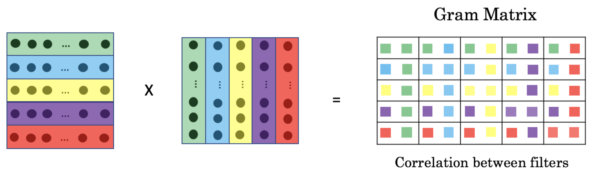
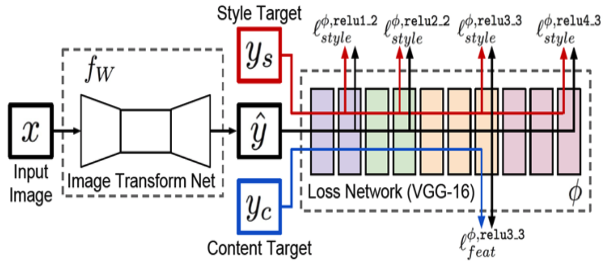
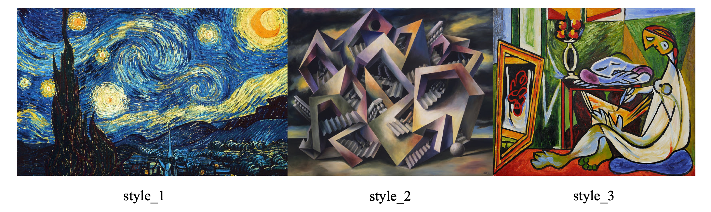
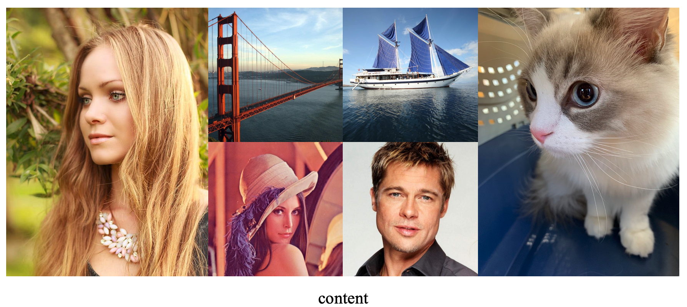
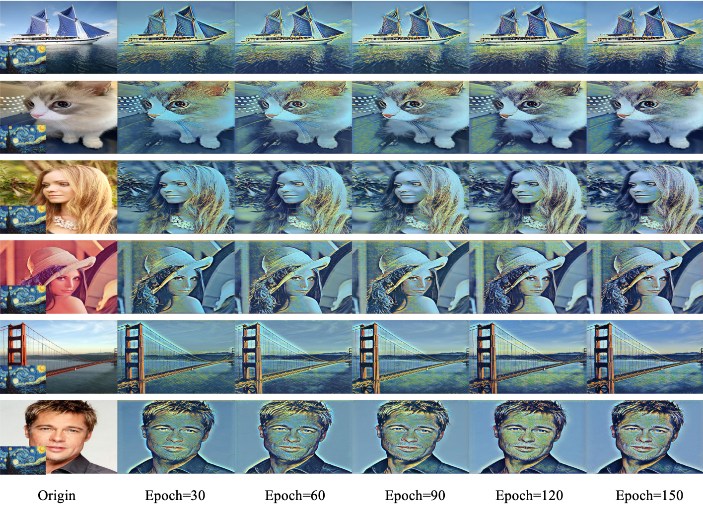
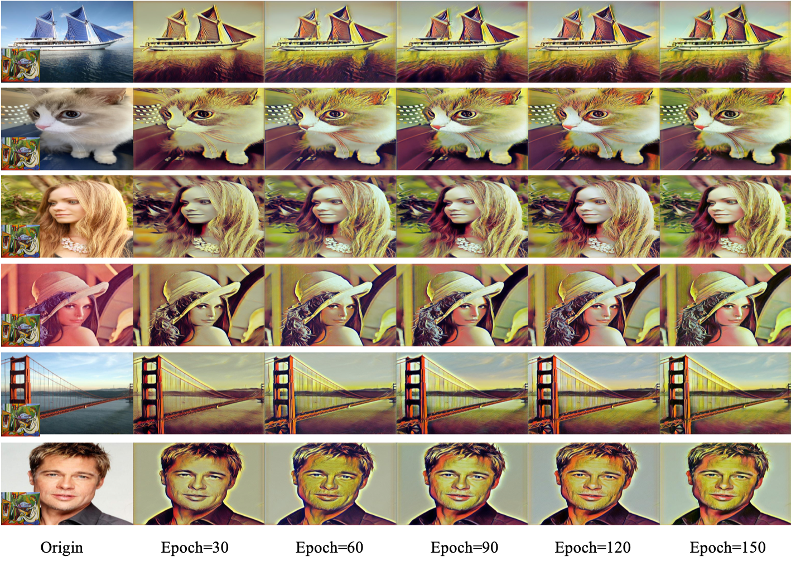
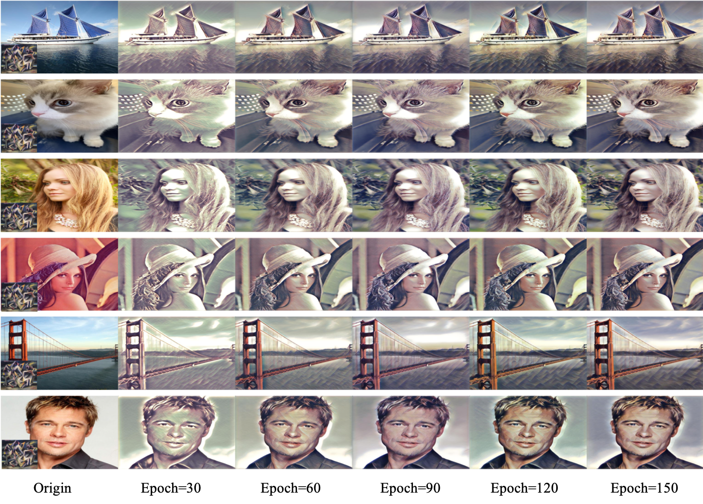

风格迁移
风格迁移
1. 什么是风格迁移
1.1 风格迁移任务介绍
简而言之，风格迁移即是将一种图像的画风（颜色、纹理等）融合到另一幅图像中，使得融合后的图像能够以风格图像的色彩风格呈现原始图像的内容（任务、景物等前景）。具体示例可见下方图示。
向风格迁移网络中输入风格图像style和内容图像content，网络便会输出融合style和content的新图像style transfer。
1.2 风格迁移网络
基于深度学习的风格迁移任务的难点在于如何度量图片的风格，如若找到一种可以度量图像风格的数学模型，便可以基于反向传播训练风格迁移网络，以达到良好的风格迁移效果。
- Gram Matrix
2015年Gatys利用Gram Matrix实现了图像风格的定量计算方法，现在大多数图像风格迁移的风格度量均采用Gram Matrix或者Gram Matrix的改进版本。因为本文所用风格度量方法也是基于Gram Matrix的，于是先简单介绍一下什么是Gram Matrix。
当输入一幅图像（2xWxH）进入卷积神经网络时，图像经过卷积层会得到CxWxH的图像特征，在特征的每个通道特征1xWxH上保留了图像的高语义特征（包括内容和风格），但是不同通道之间的学习到的特征内容是不同。比如输入是一幅人脸图像，经过卷积网络之后可能通道1学习到了人脸鼻子特征，而通道2学习到了眼睛特征，它们的特征主体是不一样的，但同时他们来源于同一幅图像，他们的风格应该是一样的，由此Gatys通过计算不同通道特征向量W*H的的协方差矩阵（CxC）定量刻画图像的风格。具体做法是将卷积网络中特征图每个通道的特征reshape成一个向量（1xWxH->1xWH）然后计算不同通道特征的（偏心）协方差矩阵，这个就矩阵就是Gram Matrix。操作示意图如上所示（图源CSDN）：
- 风格转换网络结构
使用的风格转换网络来源于Cui的《Multi-style Transfer: Generalizing Fast Style Transfer to Several Genres》，网络结构图如下所示。
从图中可以看到风格转换网络由两个网络拼接而成，Image Transform Net用于向陌生的图像融合学习到的风格特征；Loss Network仅用在网络训练阶段，借用Loss Network以得到图像的内容损失和风格损失，以此更新模型参数。具体而言，输入陌生图片$x$（一般情况下也是内容图像），经过Image Transform Net得到融合新风格的图像$\hat{y}$，然后将风格迁移后图像$\hat{y}$、风格图像$y_{s}$和内容图像（也即原始图像）$y_{c}$分别送入Loss Network，Loss Network是VGG-16的特征提取网络。分别保存三幅图像在前、后卷积层的输出响应（特征图），针对风格迁移后图像$\hat{y}$和风格图像$y_{s}$分别计算其Gram Matrix，然后利用MSELoss()度量风格差异；针对风格迁移后图像$\hat{y}$和内容图像$y_{c}$直接使用MSELoss()度量图像之间特征主体的差异。
2. 基于Pytorch的快速风格迁移实例
环境：windows 10 + RTX3060 + CUDA 11.4
requirements：
1 | |
代码主要参考:https://blog.csdn.net/weixin_48866452/article/details/109309245
2.1 数据集构建
对于风格迁移任务来说训练样本不需要太多，最少两张图片便可完成风格转换的训练。本次选取了3张风格图片与6张内容图片构建风格迁移的数据集。风格和内容图片示例如下：


样本图片来自于这个GitHub仓库。
具体的内容数据集加载方式如下方代码所示：
1 | |
2.2 风格迁移网络
迁移网络采用自编码结构，先用卷积将图像尺度缩小并学习高语义特征，再利用上采样将图像尺度放大，保证图像风格变换前后大小不变。迁移网络的Pytorch实现如下：
- TransNet
1 | |
- LossNet
1 | |
2.3 必要的工具函数
因为风格迁移没有定量评估迁移好坏的指标（一般都是通过人眼自行观察风格迁移结果去确定迁移性能），所以这里的工具函数目前包括Gram矩阵的计算函数和训练过程可视化函数。
1 | |
1 | |
通常在工具函数中还包括了存储网络超参数的config.py文件，本次风格迁移使用的超参数文件如下：
1 | |
2.4 网络训练及测试
**网络训练：**通过更改config.py文件中的style_img路径更改训练的风格图片，然后完成2.1节所示3种风格的学习。具体的train.py如下：
1 | |
训练过程的损失变化图如下：
**网络测试：**构建test.py文件，加载训练时保存的模型参数，传入需要进行风格迁移的图片，得到风格迁移结果。具体的测试文件如下：
1 | |
2.5 迁移结果展示
最后得到的风格迁移结果如下：



综合以上三种风格的迁移可视化结果可以看出，（从纵轴上观察）网络在处理人物或者动物图像时，过度的看重了图像的主体特征（内容），忽略了图像风格，这样的情况应该可以通过候选不断调整内容损失和风格损失的权重取得两者之间的平衡去解决，但限于时间和算力，并未做过多的尝试。（从横轴上观察）随着网络训练的加深，迁移后图像的风格也更加自然（虽然我觉得其实epoch=30的时候更像是图像迁移的最终目的😂）。
3. 总结
通过这次风格迁移的学习（当然也只是最基础的部分），也让我大致了解风格迁移任务的整体流程，目前完成的效果因为训练时间的限制并不是太好，整体来看有点儿像是风格滤镜那种，不像第一节介绍那种实现图片风格的完全卡通化，后面如果有时间再来好好研究一下。这次任务也让我了解一些新的东西比如：利用Gram Matrix去定量衡量图片风格，自编码网络结构的搭建，利用glob库直接生成目录内文件路径以及不用重复造轮子直接利用Pytorch官方的save_img()保存tensor为图片等等。再接再厉，继续学习🐛🐛🐛!